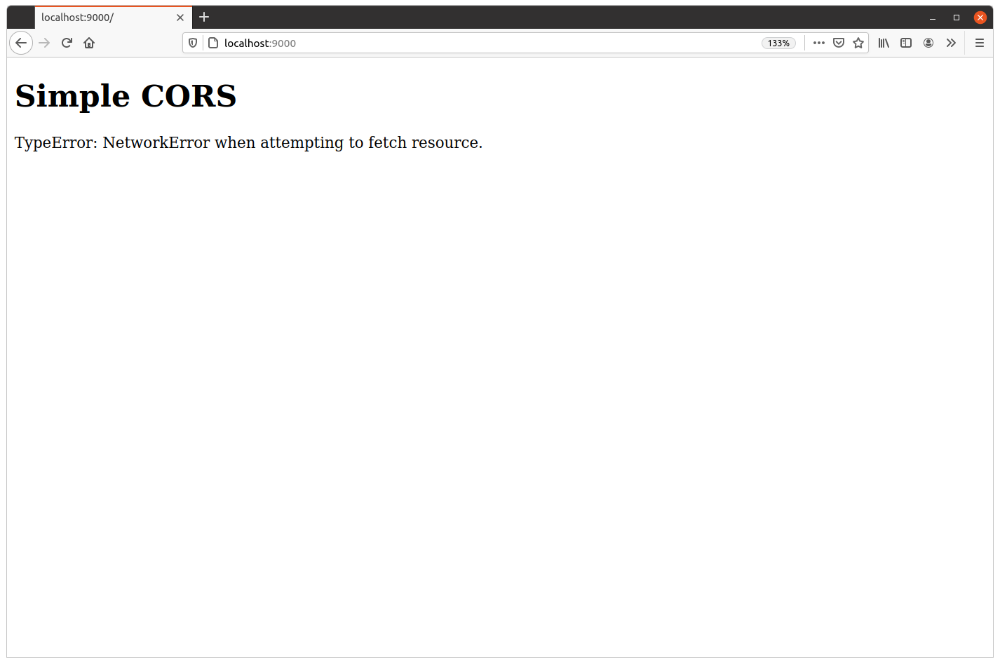
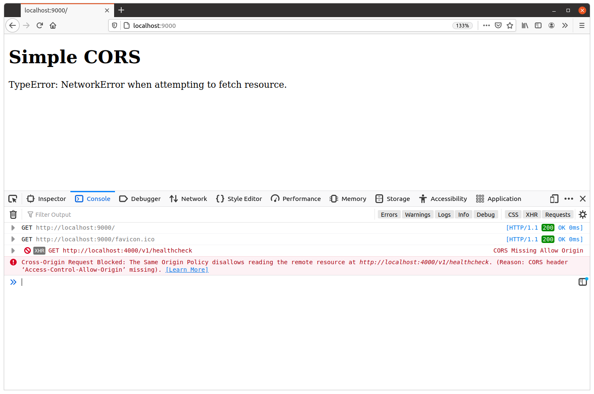
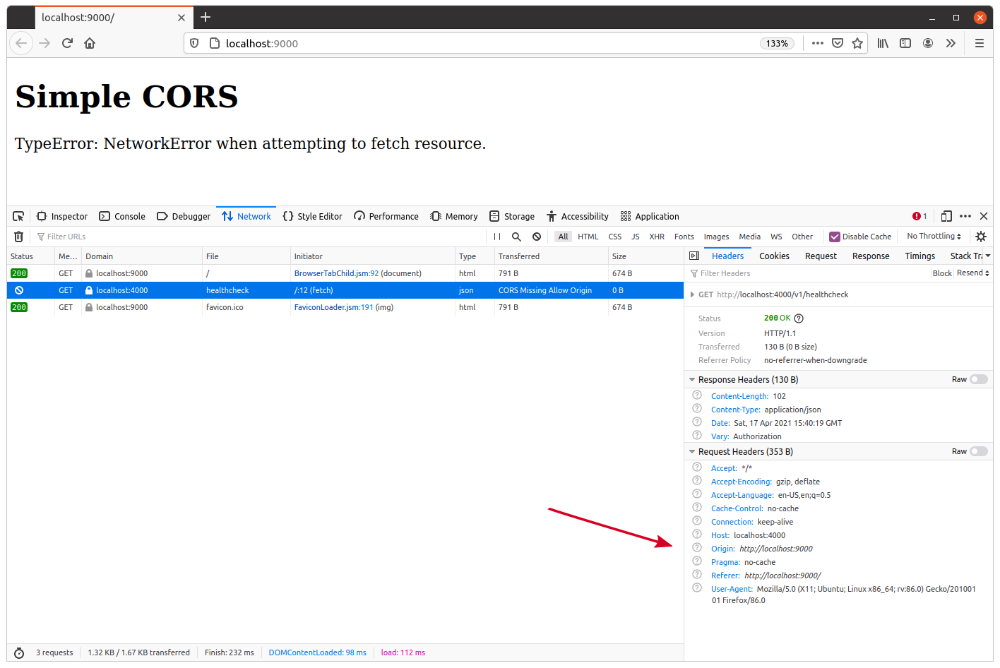

نمایش خطمشی Same-Origin
برای نمایش نحوه عملکرد خطمشی Same-Origin و نحوه شل کردن آن برای درخواستهای به API ما، نیاز داریم یک درخواست به API ما از یک origin متفاوت را شبیهسازی کنیم.
همانطور که در این کتاب از Go استفاده میکنیم، بیایید به سرعت یک برنامه Go دوم، بسیار ساده، برای ارسال این درخواست cross-origin بسازیم. اساساً، میخواهیم این برنامه دوم یک صفحه وب شامل برخی JavaScript را ارائه دهد، که به نوبه خود درخواستی به endpoint GET /v1/healthcheck ما ارسال میکند.
اگر دنبال میکنید، یک فایل cmd/examples/cors/simple/main.go جدید برای نگهداری کد این برنامه دوم ایجاد کنید:
$ mkdir -p cmd/examples/cors/simple $ touch cmd/examples/cors/simple/main.go
و محتوای زیر را اضافه کنید:
package main import ( "flag" "log" "net/http" ) // Define a string constant containing the HTML for the webpage. This consists of a <h1> // header tag, and some JavaScript which fetches the JSON from our GET /v1/healthcheck // endpoint and writes it inside the <div id="output"></div> element. const html = ` <!DOCTYPE html> <html lang="en"> <head> <meta charset="UTF-8"> </head> <body> <h1>Simple CORS</h1> <div id="output"></div> <script> document.addEventListener('DOMContentLoaded', function() { fetch("http://localhost:4000/v1/healthcheck").then( function (response) { response.text().then(function (text) { document.getElementById("output").innerHTML = text; }); }, function(err) { document.getElementById("output").innerHTML = err; } ); }); </script> </body> </html>` func main() { // Make the server address configurable at runtime via a command-line flag. addr := flag.String("addr", ":9000", "Server address") flag.Parse() log.Printf("starting server on %s", *addr) // Start an HTTP server listening on the given address, which responds to all // requests with the webpage HTML above. err := http.ListenAndServe(*addr, http.HandlerFunc(func(w http.ResponseWriter, r *http.Request) { w.Write([]byte(html)) })) log.Fatal(err) }
کد Go در اینجا باید برای شما آشنا باشد، اما بیایید نگاه دقیقتری به کد JavaScript در تگ <script> بیندازیم و توضیح دهیم چه کاری انجام میدهد.
<script> document.addEventListener('DOMContentLoaded', function() { fetch("http://localhost:4000/v1/healthcheck").then( function (response) { response.text().then(function (text) { document.getElementById("output").innerHTML = text; }); }, function(err) { document.getElementById("output").innerHTML = err; } ); }); </script>
در این کد:
- ما از تابع
fetch()برای ارسال درخواست به endpoint healthcheck API خود استفاده میکنیم. به طور پیشفرض این درخواستGETارسال میکند، اما امکان پیکربندی آن برای استفاده از متدهای HTTP مختلف و اضافه کردن هدرهای سفارشی نیز وجود دارد. بعداً توضیح خواهیم داد که چگونه این کار را انجام دهیم. - متد
fetch()به صورت asynchronously کار میکند و یک promise برمیگرداند. ما از متدthen()روی promise استفاده میکنیم تا دو تابع callback تنظیم کنیم: اولین callback اگرfetch()موفق باشد اجرا میشود و دومی اگر خطا رخ دهد اجرا میشود. - در callback ‘موفق’ خود، بدنه پاسخ را با
response.text()میخوانیم و ازdocument.getElementById("output").innerHTMLاستفاده میکنیم تا محتوای عنصر<div id="output"></div>را با این بدنه پاسخ جایگزین کنیم. - در callback ‘خطا’، محتوای عنصر
<div id="output"></div>را با پیام خطا جایگزین میکنیم. - این منطق همه در
document.addEventListener(‘DOMContentLoaded’, function(){…})بستهبندی شده است، که اساساً به این معناست کهfetch()تا زمانی که مرورگر وب کاربر سند HTML را به طور کامل بارگذاری نکرده است، فراخوانی نمیشود.
نمایش
خب، بیایید این را امتحان کنیم. بروید و برنامه جدید را شروع کنید:
$ go run ./cmd/examples/cors/simple 2021/04/17 17:23:14 starting server on :9000
و سپس یک پنجره ترمینال دوم باز کنید و برنامه API معمولی ما را در عین حال شروع کنید:
$ go run ./cmd/api time=2023-09-10T10:59:13.722+02:00 level=INFO msg="database connection pool established" time=2023-09-10T10:59:13.722+02:00 level=INFO msg="starting server" addr=:4000 env=development
در این نقطه، باید API روی origin http://localhost:4000 و صفحه وب با JavaScript روی origin http://localhost:9000 در حال اجرا باشد. از آنجا که پورتها متفاوت هستند، اینها دو origin متفاوت هستند.
پس، وقتی از http://localhost:9000 در مرورگر وب خود بازدید میکنید، عمل fetch() به http://localhost:4000/v1/healthcheck باید توسط خطمشی Same-Origin ممنوع شود. به طور خاص، API ما باید درخواست را دریافت و پردازش کند، اما مرورگر وب شما باید خواندن پاسخ توسط کد JavaScript را مسدود کند.
بیایید نگاهی بیندازیم. اگر مرورگر وب خود را باز کنید و از http://localhost:9000 بازدید کنید، باید هدر Simple CORS را ببینید که با پیام خطای مشابه این دنبال میشود:

همچنین در اینجا مفید است که ابزارهای توسعهدهنده مرورگر خود را باز کنید، صفحه را تازه کنید و به لاگ کنسول خود نگاه کنید. باید پیامی ببینید که اعلام میکند پاسخ از endpoint GET /v1/healthcheck ما به دلیل خطمشی Same-Origin از خواندن مسدود شده است، مشابه این:
درخواست Cross-Origin مسدود شده: خطمشی Same-Origin اجازه خواندن منبع از راه دور در http://localhost:4000/v1/healthcheck را نمیدهد.

همچنین ممکن است بخواهید تب فعالیت شبکه در ابزارهای توسعهدهنده خود را باز کنید و هدرهای HTTP مرتبط با درخواست مسدود شده را بررسی کنید.

چند نکته مهم برای اشاره در اینجا وجود دارد.
اولین نکته این است که هدرها نشان میدهند که درخواست به API ما ارسال شده است، که درخواست را پردازش کرده و پاسخ موفق 200 OK را به مرورگر وب با تمام هدرهای پاسخ استاندارد ما بازگردانده است. برای تأکید مجدد: خود درخواست توسط خطمشی Same-Origin متوقف نشد — فقط مرورگر اجازه نمیدهد JavaScript پاسخ را ببیند.
دومین نکته این است که مرورگر وب به طور خودکار هدر Origin را روی درخواست تنظیم میکند تا نشان دهد درخواست از کجا منشأ میگیرد (توسط فلش قرمز بالا مشخص شده است). خواهید دید که هدر به این شکل است:
Origin: http://localhost:9000
ما از این هدر در فصل بعدی استفاده خواهیم کرد تا به ما کمک کند خطمشی Same-Origin را به طور انتخابی شل کنیم، بسته به اینکه آیا به origin که درخواست از آن میآید اعتماد داریم یا خیر.
در نهایت، مهم است که تأکید کنیم خطمشی Same-Origin فقط یک چیز مرورگر وب است.
خارج از مرورگر وب، هر کسی میتواند از هر جایی با استفاده از curl، wget یا هر وسیله دیگری به API ما درخواست ارسال کند و پاسخ را بخواند. این کاملاً تحت تأثیر خطمشی Same-Origin قرار نمیگیرد و تغییر نمیکند.